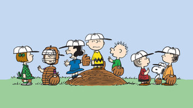

About Peanuts
At some point in your life you've probably seen one of the Peanuts characters. Orginally created by Charles Schulz in 1950, they were a staple of newspaper Sunday comics until they were discontinued upon Schulz's death in 2000.
Originally a flop, a few years after the comics began appearing in newspapers the comic strips and the cast of characters would become a fan favorite leading to animated holiday television specials for Valentine's Day, Halloween, Thanksgiving, and Christmas; as well as an full length animated movie.
Charlie Brown
A little boy who can't catch a break. The main character of the comics, Charlie Brown is an elementary school student known for being awkward and unable to fly a kite or win a game in which a ball is involved.
Linus and Lucy
Sibling duo Linus and Lucy made regular appearences throughout the comic strips. Lucy, Linus' older sister is known for being very head strong and set in her ways. She tends to come off as opinionated, sarcastic, and offensive. Lucy also has a phychiatric booth where she offers phychiatric advice for 5 cents. Linus is Charlie Brown's closest friend. Linus is known for carrying around a light blue security blanket and sucking his thumb for emotional support.
Peppermint Patty and Marcy
Pepperming Patty and Marcy are best friends who are polar opposites of one another. Peppermint Patty struggles in school, often falling asleep in class. Peppermint Patty is a tomboy who is loyal to a fault. On the other hand, Marcy is a dilegent and good student. She is very smart for her age and is described by Charles Schulz as being more "perceptive" than the other characters. She also consistantly refers to Peppermint Patty as "sir".
Snoopy
Snoopy is Charlie Brown's pet dog. He is later revealed to be a beagle. Snoopy is known for having an over active imagination that regularly lands him in the most random of situations. Snoopy is known to have a love for chocolate, particularly in the form of chocolate chip cookies. Snoopy has even become a stapple in the Macy's Thanksgiving Day parade having appeared in almost every parade since 1968, dressed in a variety of the professions he pretends to be in the comics.